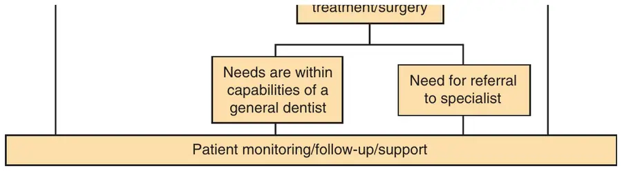

نسخه استخراجشده؛ ترجمه یا تأیید علمی انجام نشده است. وضعیت: captured
یک ضربالمثل قدیمی در پزشکی: «اگر بهاندازهی کافی به بیمار گوش کنی، معمولاً خودش تو را به تشخیص میرساند.»

و این حرف، عدد هم دارد: اصلی پذیرفتهشده در پزشکی میگوید تا ۸۵ تا ۹۰ درصد بیماریهای سیستمیک را میتوان با گرفتن یک شرححال دقیق و مستند تشخیص داد — و همین دربارهی بسیاری از ضایعات دهانی هم صادق است، به شرط آنکه تشخیصدهنده با سیر طبیعی بیماریهای شایع آشنا باشد.
پرسش از بیماری که ضایعه دارد باید شامل اینها باشد:
یک باور غلط رایج که باید صریحاً اصلاحش کرد: سرطانها، برخلاف تصور بسیاری که آنها را دردناک میپندارند، در واقع اغلب بدون درداند — مگر آنکه ثانویاً عفونی شوند. ضایعاتی که جزء التهابی دارند، بیشتر با درد همراهاند.
و بقیهی نکات درد و علائم:
و سه سؤال آخر:
و یک یادآوری مهم: ضایعات دهانی و پیرادهانی اغلب میتوانند ناشی از عادات پارافانکشنال، غذای سفت یا داغ، استعمال داروهایی که برای مصرف موضعی ساخته نشدهاند، ترومای اخیر، یا وضعیت دندانها (پوسیدگی، بیماری پریودنتال، دندان شکسته) باشند.